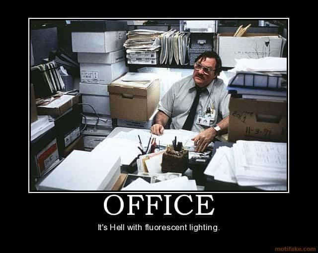

It should be no surprise to you that the modern work environment is now dominated by cultural Marxist/SJW culture. Unfortunately, there is almost no profession or industry that is safe from these influences. Some blue collar jobs, law enforcement and certain military units are still tolerable, but the inexorable march of political correctness has influenced these institutions as well.
The white collar workplace is now dominated, numbers wise, by these cultural Marxist zombies, many of whom are women. Office culture has become catty as a result. In any modern office setting, you will see nice caring attitudes and smiles on the outside, while backstabbing and general crab basket type behavior dominates behind the scenes. Even in offices where men are present, you see them taking on these behaviors. The picture looks grim; feminism is firmly entrenched and males are disadvantaged and under the spotlight simply for being male.
In a perfect world, every masculine man would be self-employed and have a steady income stream that relies on nothing but his own hard work and ingenuity. The reality is that some of us haven’t made that move yet, or have fallen on hard times and have to make ends meet. This article is to help you survive those times when you must conceal yourself in the politically correct hell hole that is the modern western office.
I have had the misfortune to spend several years in one and I hope that my experience can help others. When I say that my office was PC, I mean it—I worked in an environment in which I was expected to ask callers on the phone about their preferred pronouns. Here is how I survived.
1. Be quietly efficient and overlook inefficiency in others

Stay undercover and escape at the first opportunity
Any office in which females are present in significant numbers is inefficient. They would rather discuss each other, their sex lives, and who they hate than actually do any work. The good news here is that you can use this to your advantage by being efficient and getting your work done. This will make you indispensable, which provides you some level of job security.
Show up for work early, complete tasks on time, and always be ready to take the lead on a new project. However, you need to show no signs of pride in the job you do and always ignore it when your fat coworker is consistently fifteen minutes late to work. Remember that women instinctively hate anyone doing better than them and as a man, you already have a target on your back. So much as a raised eyebrow at a late or inefficient coworker can cause a case of “muh feelings” and suddenly you’re in front of HR having to explain your outburst of toxic masculinity.
2. Do not run game at work
Don’t even think about it, or it could be #YouToo
This ought to be a no-brainer at this point. There is no one at work that is worth your paycheck, your reputation and your chances of future employment. In the era of #MeToo simple flirting can go south before you know it. I’ll say it again; do not game at work (and from what I’ve seen around my office, you probably wouldn’t want to anyway).
3. Do not talk politics or current events
These people are zombies. They do not deviate from the cultural Marxist/SJW party line and anyone who does is an instant heretic. If they even suspect you are anything but an average beta soy boy, you are in trouble. Just being in physically good shape made me an object of suspicion. Keep the discussion work related or stay on light, PC type topics to keep yourself safe.
4. Do not use social media
Ditching social media is advisable for a number of reasons, but it’s especially important here. When I started at my office, no less than three people asked me about my Facebook within the first week. Females thrive on drama and dirt and they want yours.
The easiest way to keep them out of your business is to cut ties with all social media. Simply not posting anything controversial isn’t enough. Instagram, for instance, can show photos of others based on ones you liked or even viewed. Don’t let looking at a photo of a pistol or a frog meme cost you your paycheck.
5. Enjoy masculine hobbies and activities outside of work
Lift heavy, be a man, stay sane
Keeping up the beta blue pill image for any length of time is stressful and can drive you crazy. I have found that engaging in hobbies and activities that are traditionally masculine help me blow off steam and get re-centered.
Hit the gym, go rock climbing or fishing, or write an article to help other men to ensure that you don’t become the person you pretend to be at work. Being a man in your free time keeps you from becoming an office drone and preserves your sanity at the same time.
6. Have a backup plan
Despite your best efforts, things can go wrong at any time. Make sure you are saving for the inevitable rainy day. A minimum of two months salary can keep you in the black while you job search, should you lose yours. Keep your resume fresh and ready, and maintain contact with your references should they become necessary in a hurry.
Another good idea is to have a side gig or keep up a technical certification which can keep you on your feet should the worst occur. I maintain certification as a personal trainer so that I can always walk into a commercial gym and get a paycheck if necessary. It isn’t the highest paying job, and it certainly isn’t what I want to do with my life, but it’s there if I need it.
7. Always be hustling for a better gig
If you’re constantly seeking self-improvement, you’re probably doing this anyway. You have to think of this job as not an end, but a means to something better. Use it to pay the bills while you get that technical certification or get your new business off the ground. Not only is this practical as far as bettering yourself, working toward a goal focuses your mind and helps you preserve your sanity.
Conclusion
In short, the modern white collar office is a cesspool of SJW ideals. If you’re there now, you have my condolences. I hope these tips will help you to stay undercover, stay successful, and get out of there as soon as you can.
Read More: 8 Tips To Survive Working For A Female Boss